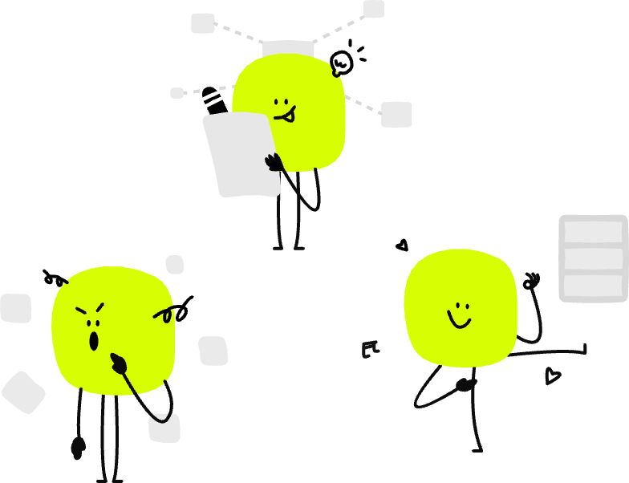

目标语言
用户原声池·听见用户
全部原声
682
待评估
208
关键反馈
102
已定义为问题
88
分组方式
筛选条件
| 原声总结 | 情感分类 | 所属模块 | 关联问题 | 分析状态 | 操作 |
|---|
待评估
关键反馈
暂不解决
问题跟进池·追踪问题
全部问题
0
待处理
0
处理中
0
已解决
0
| 问题标题 | 关联原声 | 所属地区 | 归属终端 | 指派给 | 解决状态 | 操作 |
|---|
待确认
开发中
待走查
已解决
Ctrl+V 粘贴图片至此处
或点击、拖拽文件至此处上传
预览

转化好的内容将会按照标准化的模板在此处展示
原声详情
原声分析
基本信息
内容详情
请点击此处进行上传
基本信息
内容详情
相关图片
请点击此处进行上传